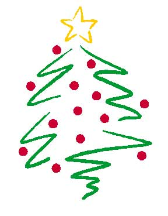
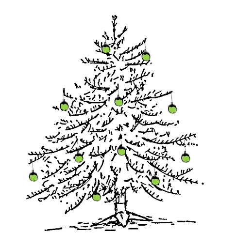

Święta Bożego Narodzenia, Narodzenie Pańskie – w tradycji chrześcijańskiej – święto upamiętniające narodziny Jezusa Chrystusa. Jest to stała uroczystość liturgiczna przypadająca na 25 grudnia. Boże Narodzenie poprzedzone jest okresem trzytygodniowego oczekiwania (dokładnie czterech niedziel), zwanego adwentem. W Kościele katolickim jest to święto nakazane.
Pierwszą zachowaną wzmianką wskazującą istnienie publicznych celebracji święta narodzin Chrystusa jest notatka w dziele Chronograf z 354 roku, znajdującym się obecnie w zbiorach Biblioteki Watykańskiej. Notatka została umieszczona w części dzieła poświęconej wspomnieniom liturgicznym męczenników tzw. Depositio Martyrum. Przed listą męczenników czczonych tego dnia umieszczono wpis o narodzinach Chrystusa w Betlejem w Judei, co sugeruje, że była to informacja o obchodach liturgicznych tego wydarzenia
Boże Narodzenie w Polsce charakteryzuje się dużą liczbą tradycji, z których największą popularnością cieszy się choinka. Szczególnie jej ubieranie, w którym uczestniczą wszyscy domownicy. Jako ozdób używa się w tym przypadku zarówno kupionych wcześniej bombek i łańcuchów, jak i ręczenie zrobionych pierników czy girland.
Kolejną nie mniej istotną tradycją wigilijną jest sama kolacja, która składa się z 12 regionalnych potraw. Zwyczaj ten nawiązuje do 12 apostołów oraz 12 miesięcy składających się na cały rok.Ponadto na wigilijnym stole powinny znaleźć się potrawy inspirowane: wodą, polem, sadem i lasem. To dlatego do najpopularniejszych wigilijnych dań należą: zupa grzybowa, kompot z suszonych owoców, karp, ciasto z makiem czy pierogi z kapustą i grzybami.